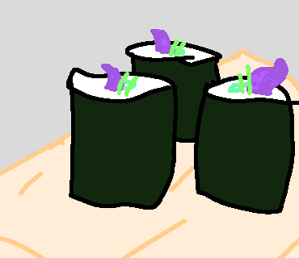

Home
Kraken Sushi

Description
The heavy umami taste of kraken kindled by sweet earthy avocado along with wawtery cucumber strips.
Ingredients
- Seasoned sushi rice, cooled to room temperature
- Roasted nori (seaweed) sheets
- Grilled kraken (Best if fresh but thawed is suitable.)
- Cucumber, julienned
- Avocado, thinly sliced
- Lightly roasted sesame seeds
Instructions
- Prep the fillings
- Prepare your rolling station
- Lay the nori and rice
- Flip it over
- Add the fillings
- Roll it up
- Slice and garnish